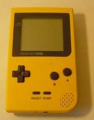

|
|
ASMSchool - Introduction
Why???
Ok, why have I actually sat down and spent the time to create ASMSchool? Well, I get quite
alot of email every month from people asking me how to make GameBoy games. Of course I know
that most of them don't have the desire or drive to actually learn about it, but for those
that really want to learn, I've provided these lessons. (so quit emailing me! LOL j/k)
What is the GameBoy?
The Nintendo GameBoy, strictly speaking, is an 8-bit portable game platform released in 1989. You might ask, "why are you messing with a system that's like 13 years old man?" Well, that's pretty easy to answer. The GameBoy, flat out, is the most successful handheld video game system ever made. One of the best reasons for it's success was the long amount of time it could run on one set of batteries. The Sega GameGear, while a great game machine, required more batteries than the GameBoy and voraciously drained them in less than 1/4 of the time of a GameBoy. This was due to the backlit Color LCD the GameGear had. The GameBoy, on the other hand had a 4-greyscale non-backlit screen. There are advantages and disadvantages to both systems, but I won't go too far into those. The Turbo Express Portable system and the Atari Lynx game system were designed with similar battery killing LCD's and ended up sharing a similar fate of the GameGear.
Nintendo also created a device called the Super GameBoy, which is a Super Nintendo cartridge that has a GameBoy cartridge slot on top of it. You plug in a GameBoy game, turn the Super Nintendo on, and you could play GB games on your TV, with a few "colorized" features similar to how the GameBoy Color colorizes greyscale games. The colorizing wasn't really true colorizing like the GameBoy Color performs, its more like placing colored plastic wrap over a greyscale screen. In addition, a GameBoy game programmed to use the Super GameBoy could draw a 256-color border on the TV screen around the smaller GameBoy screen, and instruct the SGB to generate sounds through the Super Nintendo's sound CPU. There is also another function that is fairly unknown; a GameBoy program can upload small Super Nintendo programs into the Super Nintendo's RAM, and run them. Only one commercial GameBoy game, to my knowledge, ever used this feature: Space Invaders '94. When starting, the game would give you a choice between the original GameBoy version, and a Super Nintendo version that was very very simple, but full screen. The Super GameBoy cartridge is basically a GameBoy with no LCD, instead using a special chip to send the LCD data to the Super Nintendo to display. It's a pretty cool little toy, if nothing else.
After years of phenomenal market success, Nintendo took their little workhorse and threw it back into their workshop for an overhaul. With advances in Electronics and LCD technology, it was possible for Nintendo to redesign the GameBoy with a smaller case, higher contrast LCD, and lower power requirements. The result is the GameBoy Pocket, a system that's much easier to put in your pocket. =) The system eventually came in a small variety of case colors, whereas the original GameBoy was plain ol' Grey. Japan also saw the release of a lighted GameBoy Pocket, named the GameBoy Light. It featured the exact same hardware as the GameBoy Pocket, but with the addition of an "Indiglo" backlit screen. The screen glowed a green-ish blue color.

The GameBoy Pocket was also very well received, since it only required half as many batteries, and played all of the games that were available for the original GameBoy. But again, after advances in technology, Nintendo put their little machine back on the drawing board. This time, the goal was to make a more capable system based on the GameBoy, but with COLOR features and a few hardware enhancements that many programmers asked for. The new system had to be totally backwards compatible with the GameBoy and GameBoy Pocket, and had to be small, like the Pocket version. The end result was the GameBoy Color system. It sported a Color LCD that could display up to 56 colors at a time from a palette of 32,000 colors, had a CPU that could be set to run at 2x the speed of the original GameBoy, and an infrared port for sharing data without having a link cable (though the IR port isn't really intended for active link-play games, since it's short range). Also, there are a few more hardware goodies that programmers wanted. The GameBoy color plays all of the original games, as well as new GameBoy Color Only games that take advantage of the new hardware. The greyscale games can be "colorized" by pressing different key combinations on power-up. The colors don't really change the game to full color, they just change the original game's display to a color set for the Background and 2 color sets for the sprites (characters).
Many accessories were released for the GameBoy, including a monochrome digital camera, a thermal-transfer paper printer, various lights and magnifiers, battery packs, speaker additions, etc. The GameBoy Camera was a cartridge that went right into the gameboy. It would take small greyscale images, play some simple games and music, and print those images to the GameBoy Printer. The GameBoy Printer was powered by its own batteries, and connected to the GameBoy via the link port. Games that supported the Printer could do things like print images, high scores, bonus material, etc.
|
|
|
|
|